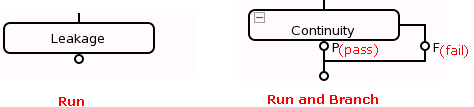
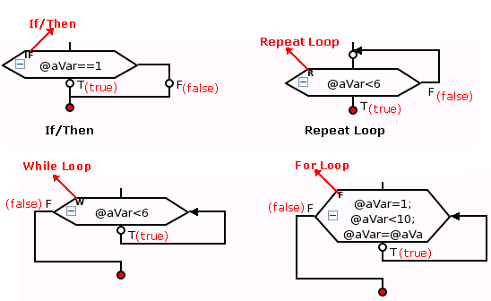
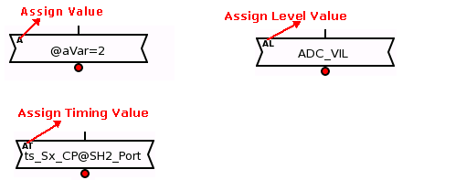
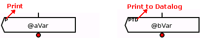
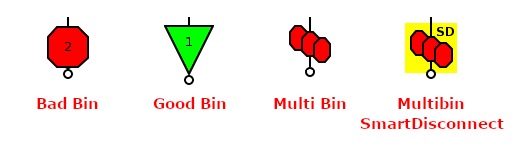
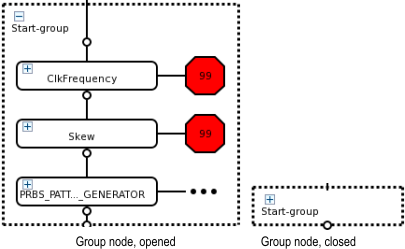

Testflow components
The components of a testflow include:
- Test suites

For the Multibin SmartDisconnect test suite that is a combination of a multibin node and a user defined test suite, refer to Bins.
- Testflow nodes (Flow control nodes, Assign Value node and Print nodes)



- Built-in functions
- Bins

- Flags
- Variables
- Group nodes

Functional changes
- Introduced before SmarTest 6.3.2
- SmarTest 7.6.1: Added bin "Multibin SmartDisconnect".